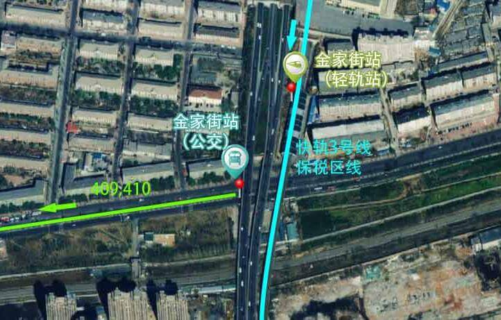

起：大连理工大学软件学院
乘二路到达自来水营业站
步行到达保税区站
乘快轨在香炉礁站下车
步行或乘坐707路 (或 43路, 407路, 409路,大连湾-青泥洼桥,18路, 517路, 41路 ) , 在五一广场站下车
乘坐26路在大工路站下车
乘坐快轨3号线保税区线 (或 快轨3号线 ) , 在金家街站下车
步行至金家街快轨站
乘坐409路 (或 410路 ) , 在五一广场站下车
乘坐26路 , 在大工路站下车13站
步行至大连理工大学141米

早上6:30本部→软院
中午12:00软院→本部
1.早6点校部西门前到软件学院教学楼；
2.中午12点软件学院6舍前（食堂边）发车到校部主楼前；
3.下午四点校部主楼前到软件学院教学楼；
4.下午四点教学楼门前发车到校本部；
5.下午五点教学楼C区后身，教学区篮球场处发车到校部主楼前。
PS：班车主要为接送老师上课以及公务，学生可以乘坐，5元/人次。
本部与软院对开巴士，大家可凭玉兰卡免费乘坐。
主校区：早上8:00发，下午16:00返回。
软件学院校区：早上6:30发，下午17:30返回。
主校区站点:汇英路与书阳路交汇处，音乐喷泉北侧路边。
软件学院校区站点：
(1）6:30站点为学生宿舍门口
（2）16:00站点为教学楼广场南侧
（1）上车请出示本人玉兰卡，免费乘坐；
（2）请提前候车，并有序排队上车，校车将准时发车；
（3）班车中途不设站点。
Ps：其实自己用手机高德地图，百度地图什么的也很方便的，走几次就会啦。